Merhaba, ben Ömer.
Her marka,
başka bir hikâye.
Fotoğraf, video ve dijital içeriklerle
markaların hikâyesini anlatıyorum.
Tanıtımı oku
Merhaba, ben Ömer. Markalar için fotoğraf ve video çekiyorum. Sosyal medya içeriklerinden reklam yönetimine, ürün çekimlerinden dergi ve backstage projelerine kadar, markaların hikâyesini görsele dönüştürüyorum. Seçili işlerime aşağıdan göz atabilirsin.
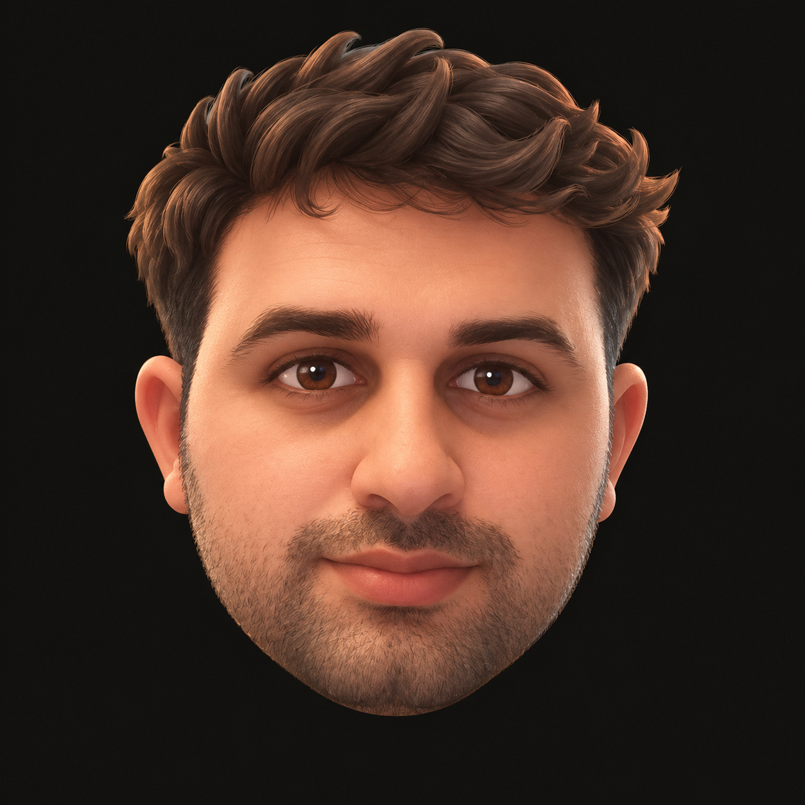
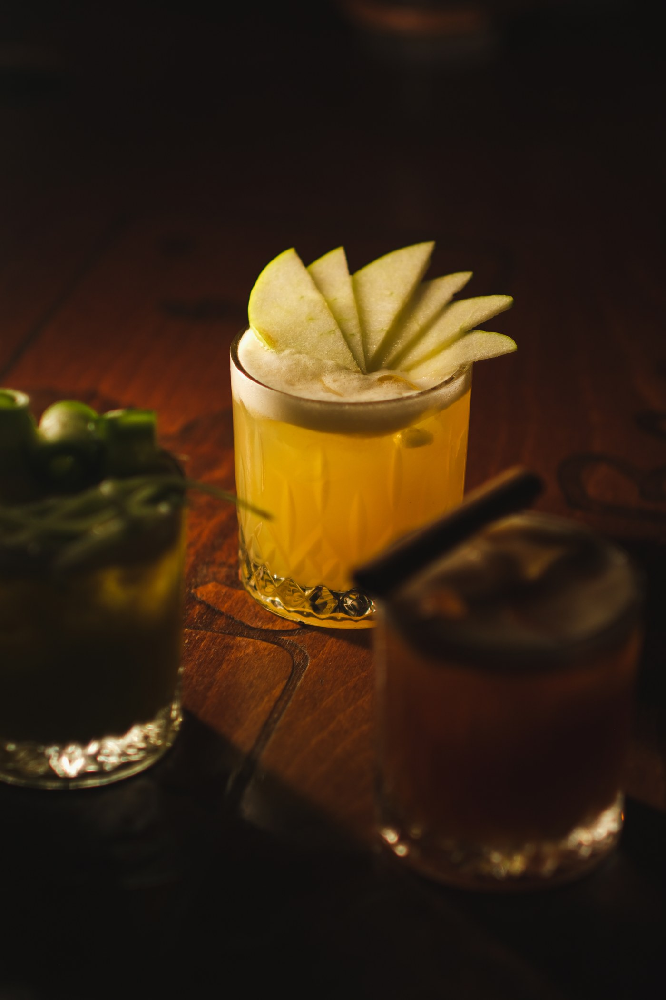
Pardon.
01Bir mekânın hissettirdikleri.
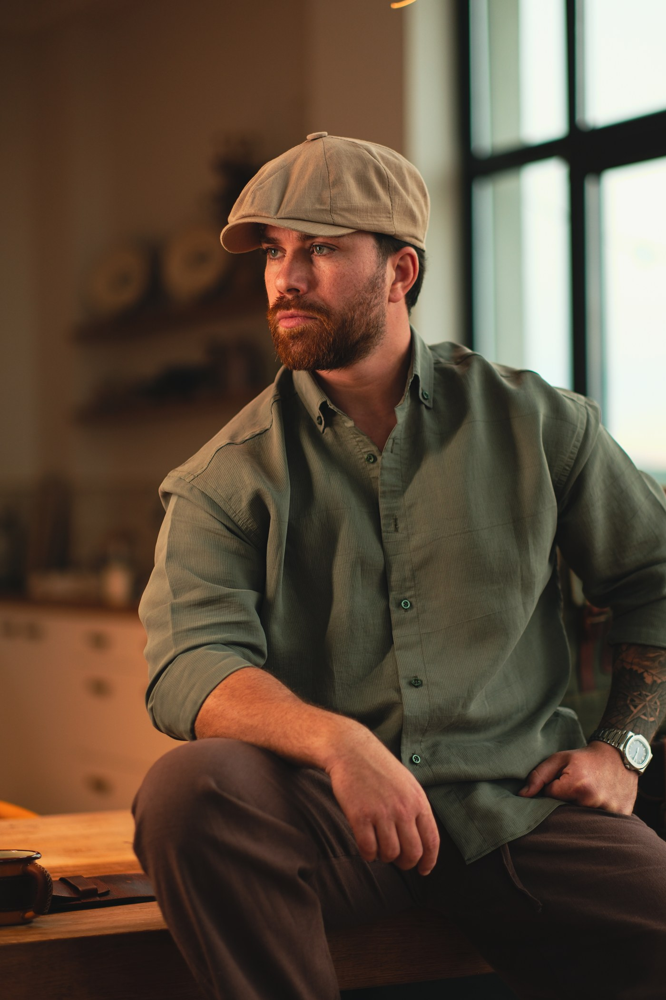
Semenderco.
02Bir markanın kendine has dünyası.
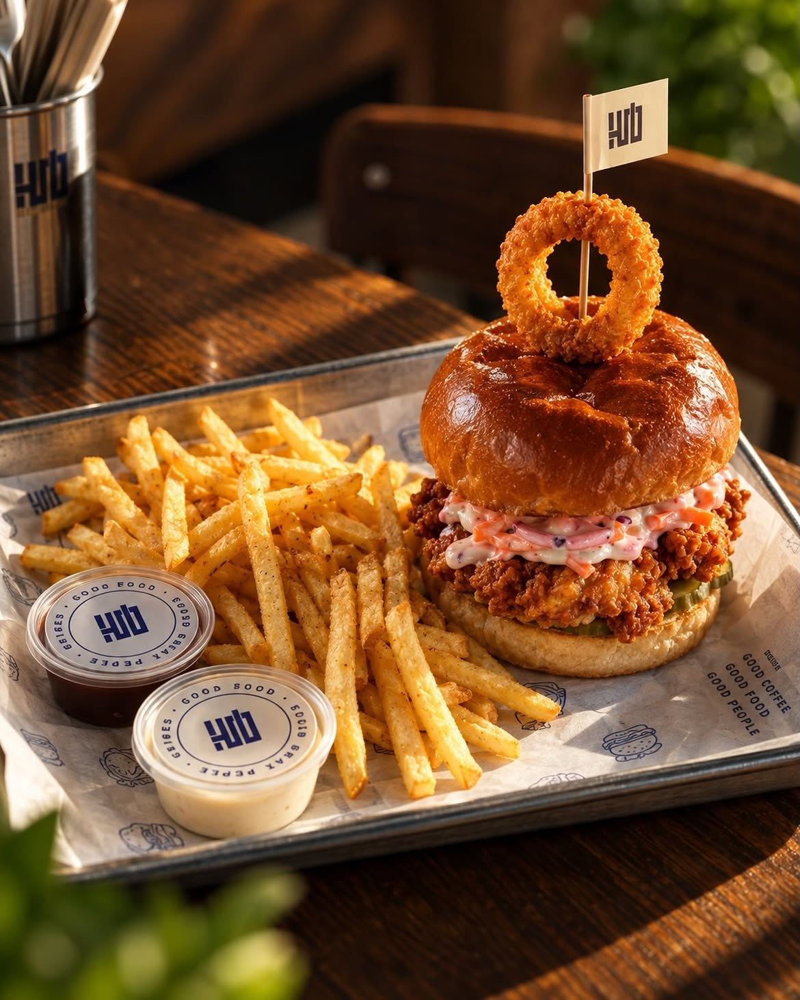
Hub.
03Coffee&Kitchen — Günün en güzel molası.
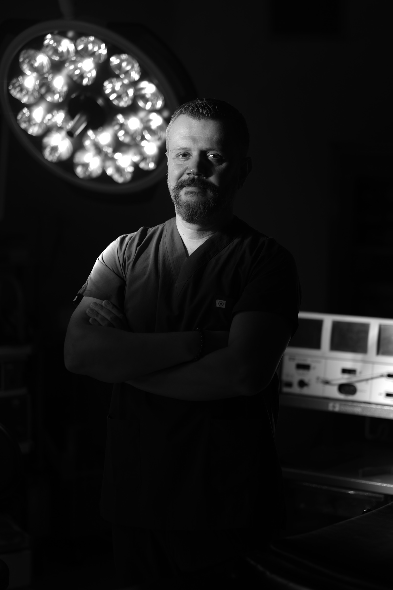
Op. Dr. Fatih Kul.
04Uzmanlığın ekrandaki dili.
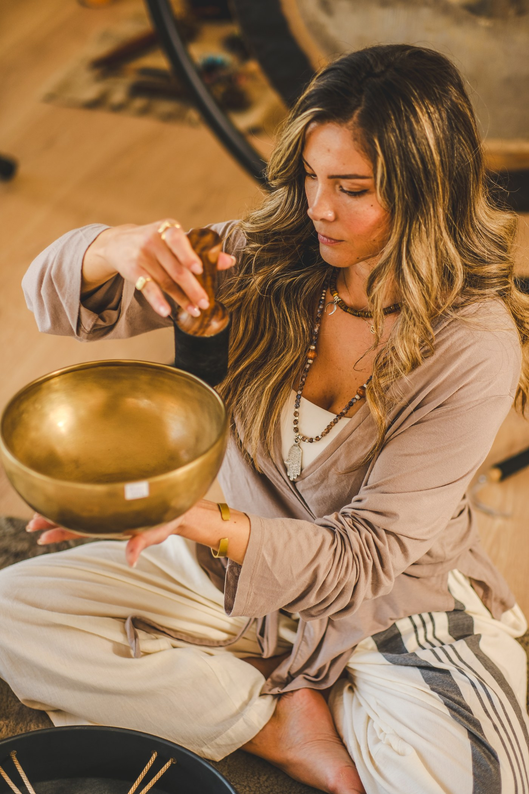
Ojas Studio.
05Biraz yavaşla. Ana yaklaş.
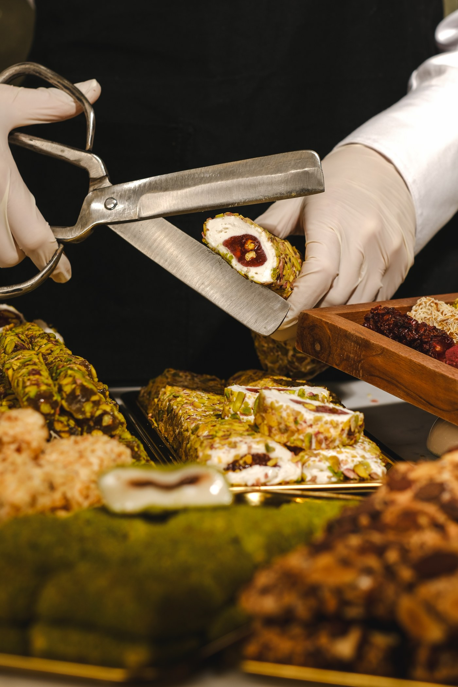
İpek Candybox.
06Küçük bir lokma, akılda kalan bir tat.
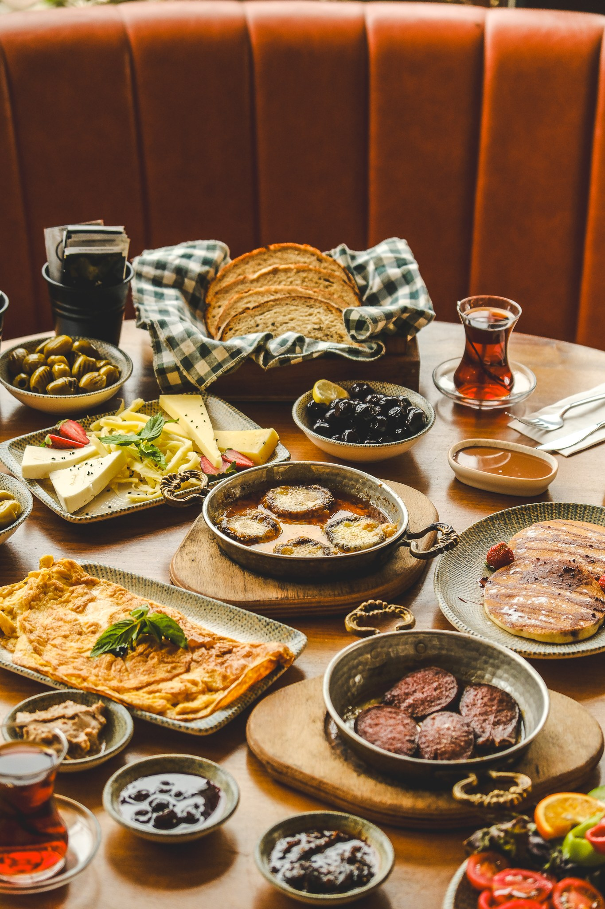
The İnii’s.
07Bir masanın etrafında.
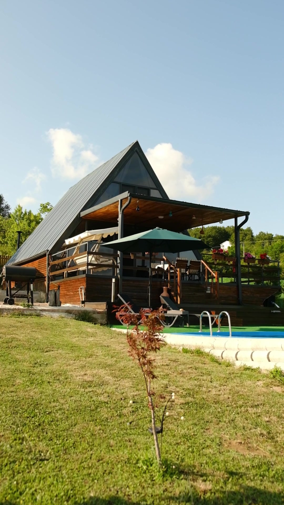
Dalila Bungalov.
08Günün ritmi, biraz daha yavaş.
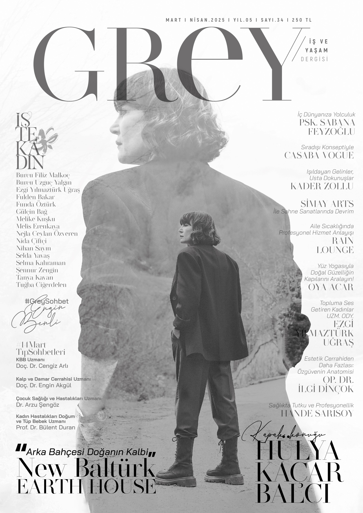
Grey Dergisi.
09Derginin sayfalarında. Kapağın arkasında.
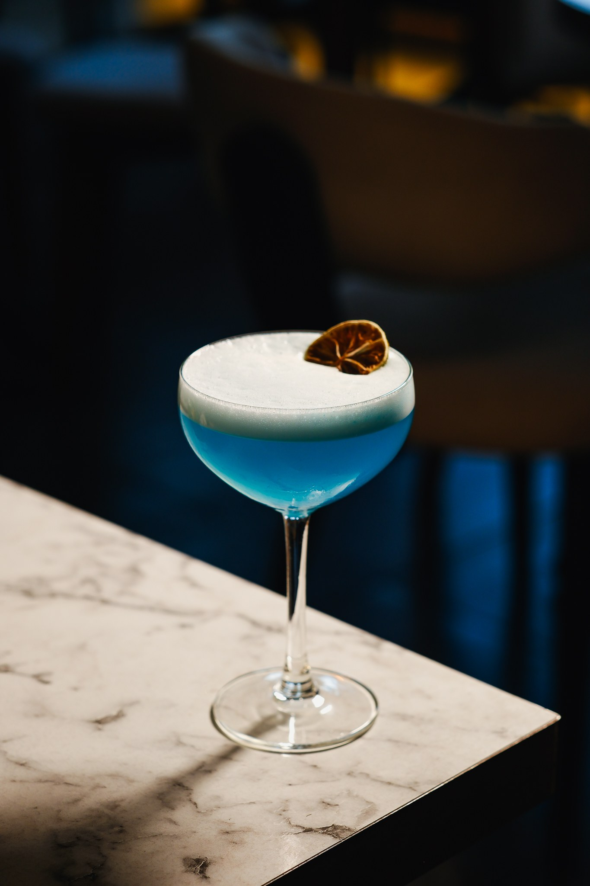
Bono.
10Bir kadehte başlayan hikâye.